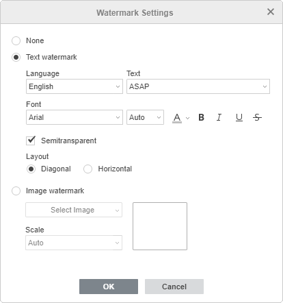
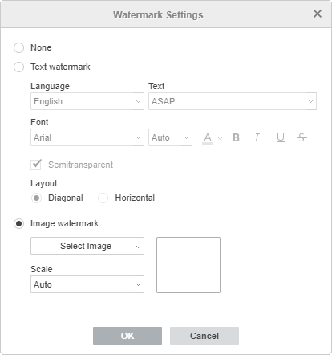

Dodavanje vodenog žiga
Vodeni žig je tekst ili slika smeštena ispod glavnog sloja teksta. Tekstualni vodeni žig omogućava označavanje statusa dokumenta (npr. poverljivo, nacrt itd.). Slikovni vodeni žig omogućava dodavanje slike, na primer logotipa vaše kompanije.
Da biste dodali vodeni žig u Document Editor:
- Pređite na karticu Izgled na gornjoj alatnoj traci.
- Kliknite na ikonu Vodeni žig na gornjoj alatnoj traci i izaberite opciju Prilagođeni vodeni žig iz menija. Otvoriće se prozor Podešavanja vodenog žiga.
- Izaberite tip vodenog žiga koji želite umetnuti:
- Korisite opciju Tekstualni vodeni žig i podesite dostupne parametre:

- Jezik - izaberite jezik vodenog žiga. Podržani jezici: Engleski, Francuski, Nemački, Italijanski, Japanski, Kineski (mandarinski), Ruski, Španski.
- Tekst - izaberite jedan od dostupnih tekstova u izabranom jeziku. Za engleski jezik dostupni su tekstovi: ASAP, CONFIDENTIAL, COPY, DO NOT COPY, DRAFT, ORIGINAL, PERSONAL, SAMPLE, TOP SECRET, URGENT.
- Font - izaberite naziv fonta i veličinu iz odgovarajućih padajućih lista. Koristite ikone sa desne strane da podesite boju fonta ili primenite jedan od stilova: Podebljano, Kurziv, Podvučeno, Precrtano.
- Poluprozirno - označite ovo polje ako želite primeniti transparentnost.
- Raspored - izaberite opciju Dijagonalno ili Horizontalno.
- Korisite opciju Slikovni vodeni žig i podesite dostupne parametre:

- Izaberite izvor slike koristeći jednu od opcija u padajućoj listi: Iz fajla, Iz URL ili Iz skladišta - slika će biti prikazana u prozoru za pregled sa desne strane,
- Skala - izaberite željenu vrednost skale iz dostupnih: Automatski, 500%, 200%, 150%, 100%, 50%.
- Korisite opciju Tekstualni vodeni žig i podesite dostupne parametre:
- Kliknite na dugme OK.
Da biste izmenili dodati vodeni žig, otvorite prozor Podešavanja vodenog žiga kao što je opisano, promenite potrebne parametre i kliknite OK.
Da biste obrisali dodati vodeni žig, kliknite na ikonu Vodeni žig na kartici Izgled i izaberite opciju Ukloni vodeni žig iz menija. Takođe je moguće koristiti opciju Nijedan u prozoru Podešavanja vodenog žiga.